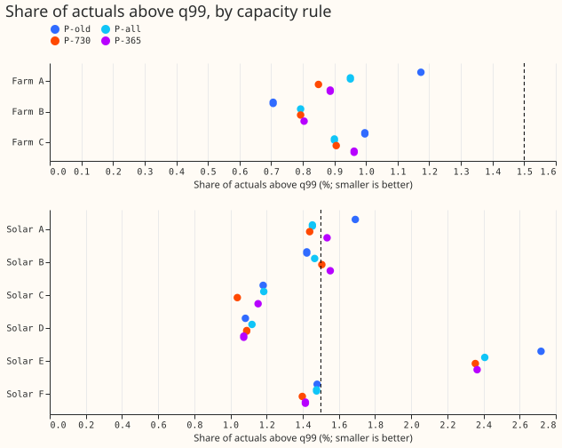
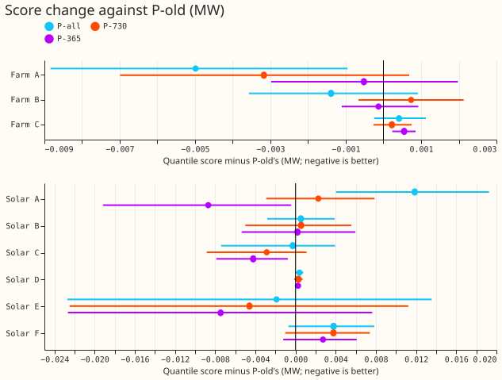
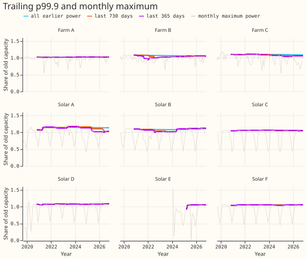
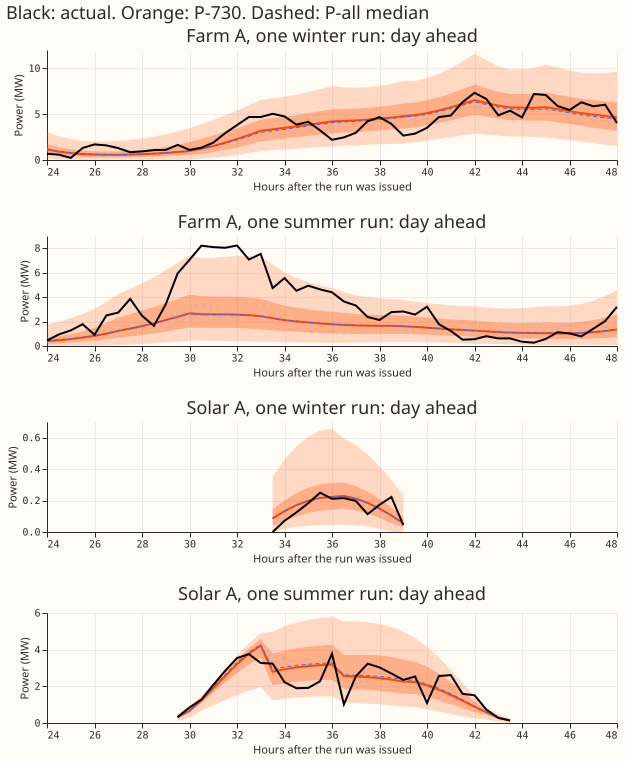
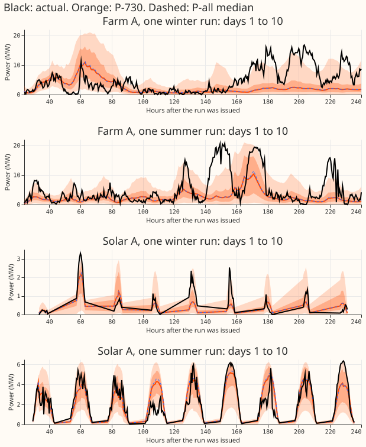

Does one effective-capacity rule for wind and solar, the 99.9th percentile of the most recent 365 or 730 days of power, keep the quantile score and the upper tail at every series?
Take-home: setting each series' capacity (the power that stands for 1.0 in the neural network's input scale) from its last 730 days of power, instead of all earlier power, nearly gives one rule for wind and solar but still fails at three solar farms. The share of actuals above the 99% quantile forecast is 0.85% for wind and 1.45% for solar, against a limit of 1.5%, and the score of Solar A (one solar farm) worsens by 0.4% against the old capacity, down from 2.3% under experiment 461's rule. The rule written down before any fit still fails at Solar B (share 1.506%) and when Solar C or Solar D is left out of the solar total (1.537% and 1.517%). A 365-day window is worse.
Capacity is the divisor that turns a series' power into a fraction between 0 and 1 for the neural
network. The margin is the largest worsening of a series' score the plan accepts (0.1% of capacity
for wind, 1% of the pooled score for solar), and the Bonferroni interval widens the 95% interval
to account for the 44 intervals reported. Experiment 461 set it to the 99.9th percentile of all
earlier power, which suited the three wind farms and not Solar A or Solar E. Here the 99.9th
percentile is taken over only the last 730 days (P-730) or 365 days (P-365) before each fit's
training ends, and the same wind neural network (member_plain, 5 seeds) and solar network
(a2_member, 3 seeds, 4 quarterly refits) are refitted. P-all is experiment 461's all-earlier-power
rule and P-old is the 99th percentile of the whole record (experiments 429 and 430). Farms A to C
are three metered wind farms and Solar A to F are six metered solar farms.
Terms. Table P, the limit (at most 1.5% of actuals above the 99% quantile forecast), and pooled (summed over all series of one technology) are as in experiment 461. A window with under 8,000 valid half-hours (solar: daylight half-hours) falls back to P-all.
Figures





Results
- C1, wind: no rolling arm differs from P-all beyond fit-to-fit spread. Pooled score 1.1744 MW (P-all), 1.1757 (P-730), 1.1764 (P-365), 1.1765 (P-old). P-730 minus P-all is +0.0013 MW (95% interval +0.0003 to +0.0021; Bonferroni interval -0.0005 to +0.0024). Pooled share above q99: 0.882% (P-all), 0.849% (P-730), 0.883% (P-365). The minimum detectable effect is 0.0034 MW, the mean gap between two P-old single-seed fits. Margins are 0.0209 MW (Farm A), 0.0090 MW (Farm B), and 0.0027 MW (Farm C), so Farm C's margin is under the minimum detectable effect and its verdict is inconclusive. The wind decision rests on the pooled score and the tail limit, and both pass.
- C2, solar P-730 fails the rule narrowly. Pooled score 0.6602 MW against 0.6627 (P-all) and 0.6601 (P-old). Pooled share 1.449% (passes). Series above 1.5%: Solar B 1.506% and Solar E 2.355%. Dropping one series leaves pooled shares of 1.451% (A), 1.437% (B), 1.537% (C), 1.517% (D), 1.297% (E), 1.460% (F), so dropping C or D fails the pooled rule. No series worsens by more than the margin of 1% of the pooled old score (0.0066 MW; Solar F +0.0038 MW is the largest).
- C3, solar P-365 fails more. Pooled share 1.496%; Solar A 1.535%, Solar B 1.552%, Solar E 2.365% are above 1.5%; dropping C, D, or F gives 1.569%, 1.576%, 1.513%. Solar D and Solar E fall back to P-all at every refit, so there they equal P-all. Solar A's score is 1.68% better than P-old (95% interval -0.0192 to -0.0004 MW), not significant after the Bonferroni correction for 44 intervals.
- Solar A follows its capacity. Score against P-old: +2.29% (P-all, ratio 1.14), +0.44% (P-730, ratio 1.105 and 1.039 at the last refit), -1.68% (P-365, ratio 1.017 and 1.002). P-730 minus P-all at Solar A is -0.0096 MW (-1.81%; Bonferroni interval -0.0177 to -0.0012). This fits the hypothesis that Solar A's high capacity under P-all is the cause. A level shift in Solar A's earlier output is a hypothesis: experiment 453 covers April to August only, and this page does not test it. The trailing p99.9 in figure 3 follows the monthly maximum only loosely.
- Solar E is untestable. Its history (21,852 to 31,278 half-hours) is under 730 days, so P-730 equals P-all there, and P-365 falls back. Solar E stays at 2.35% to 2.37% above q99 in both arms, against 2.41% for P-all. The cause is unknown: experiment 461 remarked that Solar E's short history makes its capacity noisy, without testing whether that explains the tail. Two fits with the same capacity (P-all and P-730) differ by about 0.05 points of share, which is noise on a 1.5% limit.
- Tails after table P, pooled (cover at nominal 1%, 5%, 95%, 99%). Wind P-all, P-730, P-365: q01 1.35%, 1.37%, 1.37%; q05 5.44%, 5.53%, 5.52%; q95 95.13%, 95.25%, 95.23%; q99 99.12%, 99.15%, 99.12%; q99 pinball 0.0641 MW in all three. Solar: q01 3.29%, 3.28%, 3.29%; q05 6.69%, 6.68%, 6.79%; q95 94.45%, 94.66%, 94.59%; q99 98.50%, 98.55%, 98.50%; q99 pinball 0.0248, 0.0247, 0.0244 MW. Solar D's q01 coverage is 12.3% in every arm, so the capacity rule does not cause it.
- Capacities (new over old, P-730 and P-365 at the last refit): Farm A 1.027 and 1.027, B 1.041
and 1.057, C 1.067 and 1.036; Solar A 1.039 and 1.002, B 1.121 and 1.125, C 1.053 and 1.040, D
1.083 and 1.079 (fallback), E 1.057 and 1.057 (fallback), F 1.058 and 1.060. The window half-hours
above each capacity number 22 to 36 for P-730 (Solar E 22 to 29) and 15 to 18 for P-365 (Solar D
and Solar E fall back; full table in
work/report505.txt). - Rows, seeds, cadence. Rows are equal across arms: wind 54,899 scored forecasts (one per forecast run and lead), solar 345,510. Seeds: 5 wind, 3 solar. Solar refits are quarterly and wind is one fit, as in experiment 461; the difference between P-730 and P-all could depend on the refit schedule. Bonferroni count: 44 intervals (two rolling arms, two references, 11 each), level 99.89%; leave-one-out intervals are extra and carry no Bonferroni correction. Production effort: one number per series per refit from power already stored.
Caveats
- The 1.5% limit is a point-estimate rule. Solar B at 1.506% and Solar A at 1.535% are within noise of the limit, and no interval is computed for a share, so the verdict "fails" is the pre-registered rule applied literally.
- Capacity is fixed per fit. The arms therefore differ in the training-target scale as well as in the divisor.
- Retraining schedule is experiment 461's (wind one fit, solar quarterly), not weekly.
- Scored range stops at true day 10 (lead 240 hours); solar scoring is not restricted to 12 to 36 hours.
- The avoidable-curtailment cost does not apply to wind and solar farms.
Checks
- Reviews. A fresh Sonnet reviewed the plan and the code before the first fit, a second re-derived the headline numbers from the stored forecasts, and a third reviewed the prose; each is triaged in the pull request.
- Mean of the median forecast minus the actual, pooled after table P. Wind -0.64 MW (P-old), -0.61 (P-all), -0.61 (P-730), -0.63 (P-365). Solar +0.089, +0.078, +0.089, +0.092 MW. Per series the largest moves are Solar E (+0.37, +0.43, +0.48 MW under P-all, P-730, P-365) and Solar A (+0.099, +0.061, +0.013 MW).
- Triggers. One audit trigger is met: dropping Solar C or Solar D flips the pooled share rule
under P-730. That leave-one-out condition is part of the rule written before any fit, so the flip
is the reported result and the verdict was already "not supported". The check that a capacity
ratio of 1 reproduces experiment 461's forecasts was not rerun, because only
capacity()differs from experiment 461's fit loop, whose check passed. - Margin clause. The rule's "no series worsens by more than the margin" clause is applied to point estimates. The upper 95% bounds at Solar A (+0.0082 MW) and Solar F (+0.0074 MW) exceed the 0.0066 MW margin.
- Minimum detectable effect. The 0.0034 MW is the gap between two P-old single-seed fits; the five P-all fits differ by 0.0077 MW and the P-730 fits by 0.0047 MW, so the true minimum detectable effect is probably larger.
Next steps
- Keep the all-history p99.9 for wind and the old capacity for Solar A and Solar E.
- If one rule is still wanted, judge the 1.5% limit by an interval on the share, and test a 730-day window at Solar A and Solar E with a weekly refit.